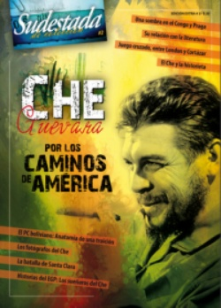

Buscar
Cuando el Che fue una sombra
"¿Dónde está el Che?", fue la pregunta que recorrió las redacciones de todo el mundo desde 1965 hasta principios de 1967. Lejos de la prensa y de los rumores más absurdos que se corrían sobre su itinerario, el Che participaba de una frustrada aventura en el Congo africano. Poco después, permanecía oculto en Praga, a la espera del inicio de las acciones en Bolivia. Esta es la historia de aquella etapa en la que el Che fue una sombra. Una historia que permaneció en silencio durante tres décadas y que permite comprender los actos de una figura clave del siglo XX.
Edición Especial N° 2
Che Guevara: por los caminos de América
Sudestada de Colección
Comprar edición impresaSumario
- Apuntes literarios
- El polvo de todos los caminos
- Juego cruzado
- El Che y la historieta
- Los fotógrafos del Che
- La batalla de Santa Clara
- Los sueñeros del Che
- El PC boliviano: anatomía de una traición
- Cuando el Che fue una sombra
Compartir Articulo
1- En la proa de la lancha, el humo del último tabaco se confunde con la niebla de la madrugada. Allí, con un pie sobre la baranda y fumando su pipa, una sombra intenta adivinar los primeros resplandores del día sobre el lago Tanganika.
Ahora, sólo el concierto infernal de los motores irrumpe en el sueño de la selva congolesa. El lago se rompe al paso de las tres lanchas que lo surcan lentamente, con la línea de flotación baja. Un centenar de hombres cansados se amontonan en las lanchas, en silencio. Van armados y exhaustos, alertas a cualquier movimiento, dispuestos a resistir un último ataque, soñando con la silueta de la costa que demora una eternidad en dejarse ver.
En la segunda lancha, una sombra fuma, con un pie sobre la baranda, mientras intenta ordenar sus ideas. Siete meses atrás, él y sus hombres hacían el viaje inverso sobre el mismo lago. Ahora regresan a Kigoma, pero muchas cosas han pasado.
Tatu es el nombre de aquella sombra que fuma en la proa, la sombra que juega con el humo de su pipa mientras comienza a ensayar palabras para una despedida. Sabe, Tatu, que la llegada a Kigoma es la despedida. Sabe que tendrá que hablar con sus hombres, cansados y amontonados, apenas se acerquen al embarcadero. Sabe, también, que les hablará de la gran experiencia que significó esa lucha en tierras extrañas y les pedirá que digan presente cuando las condiciones requieran su presencia en una nueva misión, en otro lugar del mundo. También apelará a su compromiso para que no olviden jamás al humilde pueblo del Congo y para que recuerden que sólo se es revolucionario cuando se está dispuesto a dejar todas las comodidades para emprender el camino de la lucha. Tatu sabe que no olvidará nombrar a los compañeros muertos en combate y le dirá a sus hombres que, quizá, volverán a verse en Cuba o en algún lugar del mundo. No serán necesarias más palabras.
En la proa, el humo del último tabaco va perdiendo su vigor. El día impone ahora sus reglas sobre la niebla, que va dejando paso a las formas de la costa. En la proa, una sombra duda. Elige las palabras y mira de paso las siluetas de sus hombres, ahora más ruidosos, ahora satisfechos por la cercanía de Kigoma. Tatu guarda su pipa y saca su libreta de apuntes. Necesita anotar algo para no olvidar. Ya es día cuando las lanchas llegan al embarcadero.
Tatu elige las palabras iniciales para cuando pueda redactar y corregir sus notas de campaña en el Congo. Apenas una frase, breve, feroz, será la inicial de su diario. Alguien lo busca, los motores se callan, Kigoma está cerca.
Tatu busca los ojos de sus hombres y empieza a hablar.
En su libreta de apuntes, Tatu escribió: "Esta es la historia de un fracaso".
2- "Porque, en cuanto al imperialismo yanqui, no vale solamente el estar decidido a la defensa; es necesario atacarlo en sus bases de sustentación, en los territorios coloniales y neocoloniales que sirven de basamento a su dominio del mundo". La frase, de puño y letra de Guevara, es la mejor síntesis para entender las razones que llevaron a un centenar de cubanos a combatir en 1965 en el sur africano. Por entonces, el asesinato del líder revolucionario Patrice Lumumba, la matanza en Stanleyville ordenada por el gobierno de Mobutu y la profusión de focos guerrilleros bajo varios mandos había generado un escenario de alta conflictividad en el Congo, que parecía caminar, indefectiblemente, a una confrontación decisiva para la región. El gobierno cubano compartía esa caracterización y por tanto ofreció a los revolucionarios congoleses el aporte solidario de armamento e instructores para trabajar en el campo de batalla.
Si África se asomaba entonces como el eslabón más débil de la cadena imperialista, el Congo aparecía como la chispa que podía decidir el incendio en todo el continente, de allí el interés del joven gobierno cubano por apoyar con algo más que palabras la experiencia de liberación que tenía a Laurent Kabila como referente después de la muerte de Lumumba.
Mientras tanto, en América Latina la revolución cubana había desatado una verdadera ola de movimientos armados. De todos modos, para 1965, muchos de esos embrionarios proyectos guerrilleros habían sido aplastados sin demasiado esfuerzo por los enemigos de la revolución. La conclusión general era que todavía no estaban dadas las condiciones para instalar un frente a nivel continental y que había que esperar. Y no había nada que irritara más al Che que esa necesaria espera.
Por eso viaja el Che de incógnito hasta el Congo: como una forma de apaciguar la espera, impulsado por la idea de Fidel Castro ("Yo mismo le sugería al Che la idea de que había que ganar tiempo, esperar. Su estancia en África era transitoria, en espera de que se crearan las condiciones para viajar a Sudamérica", explicó Fidel), como un entrenamiento útil para él y sus hombres en la lucha guerrillera y como un gesto de amistad internacionalista que Cuba repetiría después en Angola, Namibia, Zimbabwe y Mozambique.
Pero la situación de la guerrilla congolesa no parecía la misma que describían sus dirigentes en los encuentros en los que participó el Che durante su gira por África. La revolución en el Congo carecía de un mando unificado y convivían en ella infinidad de tendencias encontradas, sus líderes ni siquiera visitaban los frentes de batalla y negociaban desde Tanzania ("Eran simples viajantes. No estaban nunca donde los necesitaban. Los grandes jerarcas se pasaban el día bebiendo, de tal forma que caían en borracheras increíbles sin preocuparse de ocultarlo a la población", describe el Che), las bases militares eran un modelo de desorganización extrema y los soldados una masa dispersa con un entrenamiento nulo en el manejo de armas. Incluso el ejército rebelde mantenía una relación parasitaria con los campesinos, a quienes obligaban a garantizar su alimentación y traslado de pertrechos de guerra. Y en combate, los soldados cubanos se sorprendían por una instalada tendencia a salir corriendo apenas se oían los primeros disparos, dejando tiradas sus armas para aligerar la carrera y sin preocuparse por atender a los caídos. "Más que un ejército, eso parecía una organización de venados", definió un miembro de la expedición cubana. Por otra parte, los ruandeses que colaboraban con la causa revolucionaria del Congo mantenían una relación de recelo y desconfianza con sus compañeros de armas congoleses, lo que no facilitaba mucho la convivencia en los campamentos.
Y en el medio de tan ríspido escenario, un centenar de cubanos cuya misión era ayudar, enseñar y compartir con los congoleses la experiencia en el campo de batalla. "La idea que nos guiaba era la de hacer luchar juntos hombres experimentados en batallas por la liberación (...) en Cuba, con hombres sin experiencia y provocar, con esto, lo que nosotros llamábamos la 'cubanización' de los congoleses. Se verá que el efecto fue diametralmente opuesto y cómo se produjo con el tiempo la 'congolización' de los cubanos", escribe el Che más tarde en su diario de campaña.
3- Horas después de atravesar el lago Tanganika por primera vez y de instalarse en la base de Kibamba, el Che (desde entonces apodado "Tatu", que significa "Tres" en swahili), recibió la visita del teniente coronel Lambert, quien "simpático, con aire festivo, me explicó como para ellos los aviones no tenían ninguna importancia porque poseían la dawa, medicamento que los hace invulnerables a las balas. (...) Lo explicó entre sonrisas y me sentí obligado a festejar el chiste en que veía una forma de demostrar la poca importancia que se le concedía al armamento enemigo. A poco me di cuenta de que la cosa iba en serio y que el protector mágico era una de las grandes armas de triunfo del ejército congolés".
A poco de llegar, sorprendido todavía por la desorganización imperante y la ausencia de los líderes en el frente, Tatu se topaba con un elemento que sería un estigma en la campaña: la dawa. Producto de la mezcla de varios jugos de hierbas y otras materias mágicas no conocidas, la dawa era el brebaje que preparaban los mugangas (brujos locales) antes de la batalla, una suerte de poción mágica con la que marcaban la frente a los soldados que, de este modo, estaban protegidos contra cualquier peligro. Pero, claro está, semejante protección divina requería una curiosa contraprestación: el soldado estaba impedido de tocar objeto alguno que no le perteneciera, tampoco a una mujer y menos todavía sentir miedo en la batalla. Tatu explica con ironía los más usuales casos de vulneración de la dawa: "La solución a cualquier falla es muy sencilla; hombre muerto: hombre con miedo. Como el miedo acompaña las acciones de la guerra, los combatientes encontraban muy natural el achacarle la herida al temor, es decir, a la falta de fe. Y los muertos no hablan; se les puede cargar con las tres faltas".
La dawa no sería, sin embargo, el único caso en el que la superstición fuera más fuerte que las leyes de la guerra. Otra intervención "mágica" que complicó bastante el adiestramiento defensivo a cargo de los cubanos fue la construcción de trincheras para protegerse: "Las trincheras siempre fueron un dolor de cabeza ya que, por algún temor supersticioso, los soldados congoleses rehuyen meterse en huecos cavados por ellos mismos", escribe Tatu.
Otras presencias menos simpáticas, típicas de la geografía congolesa, afectaron con fiereza a toda la tropa cubana. Las altas fiebres y el paludismo no dejaron cubano por visitar. Mientras tanto, Tatu observaba azorado el tremendo daño que generaba el consumo habitual del pombe (un licor destilado y fabricado con harina de maíz y yuca) entre los soldados congoleses. El diario de Tatu es útil para observar los detalles problemáticos de aquel licor: "Había días en que el pombe inundaba aquel campamento con su secuela de riñas, intoxicaciones distintas, faltas a la disciplina, etcétera".
4- "Tal era nuestra labor de sembradores al voleo, lanzando semillas con desesperación a uno y otro lado, tratando de que alguna germinara antes del arribo de la mala época". De esta forma, Tatu sintetiza las sensaciones que generaban los primeros meses en el frente, mezclando jornadas de hastío sin movilidad con algunas operaciones armadas menores que evidenciaron las graves carencias militares del ejército congolés.
Después de un breve lapso de inactividad, la derrota en la ofensiva sobre Front de Force (fracaso atribuido a la "ineficacia" de la dawa) y otros graves traspiés del ejército rebelde en operaciones posteriores fue degradando la moral de los combatientes. Por otro lado, el golpe militar encabezado por Mobutu y su falsa política de pacificación fue dividiendo aún más las fuerzas rebeldes locales y dejando a los cubanos en el medio de un franco retroceso del proyecto revolucionario. Para agosto de 1965, el informe de Tatu es lapidario y preanuncia un final traumático: "No podemos decir que la situación sea buena: los jefes del movimiento pasan la mayor parte del tiempo fuera del territorio (...). El trabajo organizativo es casi nulo, debido a que los cuadros medios no trabajan, no saben hacerlo, además, y todo el mundo les tiene desconfianza. La indisciplina y la falta de espíritu de sacrificio son la característica dominante de todas estas tropas guerrilleras. Naturalmente, con esas tropas no se gana una guerra".
La degradación que experimentaban las fuerzas congolesas comenzaba a afectar la moral de los cubanos. Varios empezaron a manifestar sus deseos de regresar a Cuba al mismo tiempo que las tropas rebeldes se ven forzadas a estirar la retirada ante la ofensiva de las fuerzas belgas. De frente a un ejército sin dirección y en desbandanda, Tatu se muestra impotente ante un clima cada vez más hostil hacia la presencia de los cubanos en la zona: "Sentía ante ellos la impotencia que da la falta de comunicación directa; quería infundirles todo lo que sentía realmente, pero el transformador de la traducción y quizá la piel, lo anulaba todo", destaca y después agrega detalles de un momento particular de diálogo con los congoleses a su cargo: "Tras una de sus frecuentes trasgresiones, les hablé en francés, enfurecido; les decía las cosas más terribles que podía encontrar en mi pobre vocabulario y en el colmo de la furia les dije que había que ponerles faldas y hacerles cargar yuca en una canasta (ocupación femenina), porque no servían para nada (...); mientras el traductor vertía la descarga en swahili, todos los hombres me miraban y se reían a carcajadas con una ingenuidad desconcertante".
El proyecto revolucionario se derrumba, y lo hace por sus propias contradicciones. La derrota se avecina. El Che escribe: "Hay que tener el espíritu realmente bien templado para aguantar las cosas que suceden aquí; no se trata de hombres buenos, aquí hacen falta superhombres".
5- El 1° de noviembre llega al campamento una carta con las novedades temidas por Tatu. En ella, un delegado cubano reconoce el pedido del Movimiento de Liberación del Congo, que agradece los servicios prestados pero exige el retiro de las tropas cubanas como paso necesario para una tregua. "Ése era el golpe de gracia dado para una revolución moribunda", afirma. En medio de una desordenada retirada, donde conviven errores tácticos que cuestan vidas, crecen las calumnias contra los cubanos, Tatu define los pasos a seguir. Comunica a Dar Es Salaam la voluntad de retirar el grueso de la expedición, pero anuncia que permanecerá en la zona "un grupo pequeño como símbolo de prestigio de Cuba". "Mi intención era enviar a los enfermos, a los débiles y a los flojos de piernas y quedarme con un grupo pequeño para continuar la lucha", explicará luego. Sin embargo, la intención original de Tatu (movilizar ese pequeño grupo para encontrarse con otro foco guerrillero aún activo, pero en el otro extremo del Congo) no parece recibirse con agrado entre sus hombres de confianza. El riesgo es cada vez más alto, la pinza dispuesta por el enemigo arrincona a los rebeldes contra el lago y los deja cada día con menor margen de maniobra. Para el 20 de noviembre, se acuerda la llegada de tres lanchas desde Kigoma para transportar a los cubanos. Es el fin de la epopeya.
"La idea de desalojar completamente e irnos como habíamos venido, dejando allí a campesinos indefensos y hombres armados pero indefensos, dada su poca capacidad de lucha, derrotados y con la sensación de haber sido traicionados, me dolía profundamente. (...) En realidad la idea de quedarme siguió rondando hasta las últimas horas de la noche y quizás nunca haya tomado una decisión, sino que fui un fugitivo más", reconoce sobre ese triste epílogo. La evacuación completó el cuadro dramático: los congoleses rogaban a los cubanos que los aceptaran a bordo de tres lanchas desbordadas de soldados. Sólo siete africanos (entre congoleses y ruandeses), los que habían demostrado mayor firmeza militar en los peores momentos, son admitidos a bordo.
Alejado del tumulto de la evacuación, Tatu fuma y espera en silencio el final de los preparativos. Minutos antes, recorre con la vista el triste paisaje de una multitud de congoleses en la costa, solos, derrotados, desesperados. "Durante esas últimas horas de permanencia en el Congo me sentí solo, como nunca lo había estado, ni en Cuba ni en ninguna parte de mi peregrinar por el mundo", escribe.
Preparados para defenderse de una última agresión, las lanchas comienzan a desandar el camino del regreso por el lago.
6- La embajada cubana en Dar Es Salaam es el refugio elegido por El Che para aguardar su nueva partida. Allí, se ocupa de corregir las notas tomadas durante la experiencia en el Congo. Esas notas formarán parte de un Diario que permaneció en la más absoluta reserva durante 35 años, hasta el 2000, cuando el gobierno cubano autorizó su publicación. Allí, en esas descarnadas notas, el Che culmina su detallada crónica con un balance de su propia acción en la lucha que configura una de las lecturas más íntimas sobre su personalidad.
La retirada final es la medida que el Che analiza como equivocada en sus conclusiones: "No me animé a exigir el sacrificio máximo en el momento decisivo. Fue una traba interna, psíquica. Para mí era muy fácil quedarme en el Congo; desde el punto de vista del amor propio del combatiente era lo que cuadraba hacer. (...) Considero que debería haberme sobrepuesto en mi interior al lastre de ese análisis autocrítico e imponer a una determinada cantidad de combatientes ese gesto final; pocos, pero deberíamos habernos quedado".
Además de reconocer como falla personal no haber profundizado su conocimiento del swahili para mejorar la comunicación con los soldados locales, Guevara reconoce conflictos a la hora de vincularse con sus propios hombres: "El hecho de retirarme a leer, huyendo de los problemas cotidianos, tendía a alejarme del contacto con los hombres, sin contar que hay ciertos aspecto de mi carácter que no hacen fácil el intimar".
Por último, su diario contempla una cita que parece transformar las lecciones de la derrota en enseñanzas para su futuro próximo: "He aprendido en el Congo; hay errores que no cometeré más, tal vez otros se repitan y cometa algunos nuevos. He salido con más fe que nunca en la lucha guerrillera, pero hemos fracasado. Mi responsabilidad es grande; no olvidaré la derrota ni sus preciosas enseñanzas"...
Comentarios
Hugo Montero
Articulos más vistos


LIBRERÍA SUDESTADA

Colección infantil

Distribuidora de Libros

Suscripción

Sudestada en URUGUAY

Otros articulos de esta edición
El PC boliviano: anatomía de una traición
Detrás de la epopeya del Che y sus hombres en Bolivia, se oculta la historia negra de una traición. ¿Quién ...
La batalla de Santa Clara
Diciembre de 1958. La ofensiva del Movimiento 26 de Julio avanza sobre Las Villas y rodea Santa Clara, ciudad de ...
Los fotógrafos del Che
En cientos de retratos, el Che se asoma al presente argentino con los gestos de un pasado que lo tuvo ...
El Che y la historieta
A mitad de camino entre el esténcil y las superproducciones cinematográficas, el Che también fue una historieta. Con los pies ...
Los sueñeros del Che
Silencio, olvido, mentira. La historia del EGP permaneció durante décadas oculta en las entrañas de la tierra. Comandado por Jorge ...
Juego cruzado
Esta es una historia de cruces y paradojas. Los protagonistas son, a la vez, hacedores y personajes de una trama ...